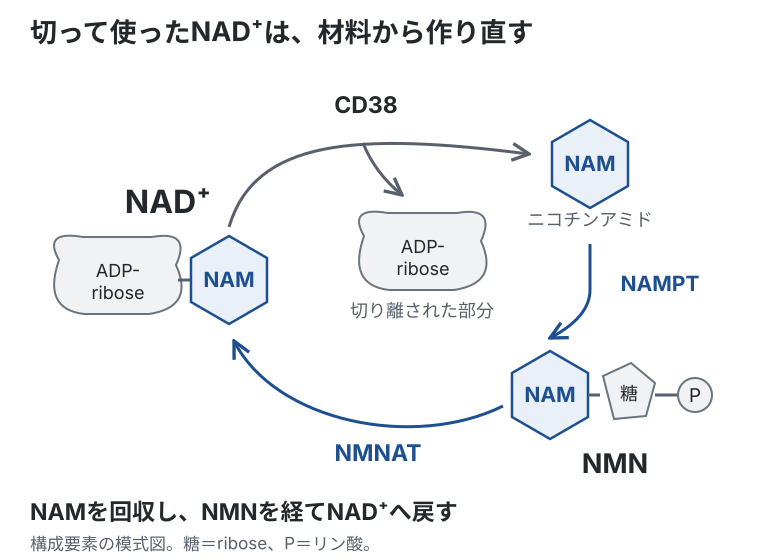

基礎 ／ エネルギー
NAD⁺
公開 2026-08-24 ／ 最終更新 2026-09-13
糖や脂肪酸からエネルギーを取り出す途中では、栄養素から電子を抜き取ります。その電子を受け取るのがNAD⁺（nicotinamide adenine dinucleotide、ニコチンアミドアデニンジヌクレオチド）です。電子を受け取ったNADHが電子伝達系へ電子を渡すことで、ATP産生につながります。
この章の一言
NAD⁺は栄養素から電子を受け取り、NADHとしてATP産生につなぎます。この受け渡しを続けるには、NADHからNAD⁺へ戻す必要があります。また、DNA修復などでもNAD⁺が消費されるため、細胞は消費した分を作り直しています。
1 NAD⁺とNADHは、同じ分子の二つの状態
NAD⁺は、栄養素から取り出された電子を受け取る補酵素です。電子を受け取るとNADHになり、電子を渡すとNAD⁺へ戻ります。
解糖系・PDH・TCA回路などで、NAD⁺が電子を受け取ります。このとき、電子を手放した栄養素は酸化され、電子を受け取ったNAD⁺は還元されます。
2 NADHは電子を渡し、NAD⁺に戻る
NADH は、受け取った電子をミトコンドリアの電子伝達系へ渡します。電子伝達系は、その電子の流れを使って ATP を作ります。電子を渡した NADH は、再び NAD⁺ に戻ります。
この往復が続くことで、栄養素の分解も続けられます。NADH が電子を渡せないと NAD⁺ が戻らず、解糖系やTCA回路は進みにくくなります。
電子の流れとATP合成のつながりは電子伝達系で扱います。
NADHがたまると、栄養素から電子を受け取りにくくなる
細胞では、NAD⁺が電子を受け取る反応と、NADHが電子を渡してNAD⁺へ戻る反応が絶えず進んでいます。この二つの状態の割合をNAD⁺/NADH比といい、酸化還元（レドックス）の状態を表します。通常は、細胞内の場所や代謝の状態に応じたバランスが保たれています。
たとえば電子伝達系の働きが低下すると、NADHから電子を渡しにくくなり、NADHがたまります。すると、電子を受け取れるNAD⁺が相対的に少なくなり、栄養素の分解が進みにくくなります。NADの総量が保たれていても、この受け渡しが滞ることがあります（PMID 27124460）。
細胞質では、pyruvate（ピルビン酸）をlactate（乳酸）へ変えるときにも、NADHからNAD⁺へ戻ります。これにより、解糖系で再び電子を受け取れるようになります。逆に、乳酸をピルビン酸へ戻すときには、NAD⁺が電子を受け取ってNADHになります（→ 解糖系）。
3 DNA修復などではNAD⁺を消費する
ここまで見た電子運搬では、NAD⁺とNADHが入れ替わるだけです。NAD全体の数は減りません。
一方、NAD⁺分子そのものを切って使う酵素もあります。この場合は、NAD⁺の数が実際に減ります。
- PARP：DNA損傷への応答に使う
- sirtuin（サーチュイン）：タンパク質の働きを調節するために使う（→ エピゲノム、Hallmarks of Aging）
- CD38：NAD⁺を分解し、細胞内のシグナルにも関わる
- SARM1：傷ついた軸索でNAD⁺を分解する
DNAが傷つくと、PARPはNAD⁺を使って修復に関わるタンパク質を集める反応などを進めます。修復を支える正常な働きですが、損傷が多く、NAD⁺の消費が再合成を上回ると、NAD全体の量が減ります。培養細胞でも、DNA損傷に伴うPARPの活性化でNAD⁺が減少することが確認されています（PMID 26478723）。
消費されたNAD⁺を、salvage経路で補う
NAD⁺を切って使う反応では、NAM（nicotinamide、ニコチンアミド）が生じます。細胞はこのNAMを回収し、NMN（nicotinamide mononucleotide、ニコチンアミドモノヌクレオチド）を経てNAD⁺を作り直します。この再利用の経路がsalvage経路です。

この再利用を進めるのが、NAMPTとNMNATです。NAMPTはNAMからNMNを作り、NMNATはNMNからNAD⁺を作ります。
トリプトファンからもNAD⁺を作る
細胞は、NAMを再利用するほかに、アミノ酸のtryptophan（トリプトファン）からNAD⁺を新しく作ることもできます。トリプトファンを分解するキヌレニン経路の一部が、この合成につながります。
詳しく読む：キヌレニン経路と、ビタミンB₃からの合成
トリプトファンはkynurenine（キヌレニン）を経て分解され、その先でできるquinolinate（キノリン酸）がNAD⁺の材料になります。このように別の材料から新しく作ることをde novo合成と呼びます。キヌレニン経路には複数の分岐があり、その一つがNAD⁺合成へつながっています。
経路の寄与は組織によって異なります。マウスでの追跡実験では、多くの組織はNAMの再利用に依存し、トリプトファンからの合成は主に肝臓で認められました（PMID 29685734）。
ビタミンB₃もNAD⁺の材料です。ニコチンアミド（NAM）は先ほどのsalvage経路へ入り、nicotinic acid（ニコチン酸）はPreiss–Handler経路を経てNAD⁺になります。トリプトファン・ニコチン酸・NAMからの合成は、ヒト由来の培養細胞でも追跡されています（PMID 12123656）。材料の取り込みや、外から補う介入はNAD⁺前駆体で扱います。
詳しく読む：ミトコンドリアへのNAD⁺の輸送と、電子を渡すshuttle
細胞質とミトコンドリアでは、NAD⁺とNADHが別々に管理されています。ミトコンドリア・マトリックスにもNAD⁺が必要です。PDH・TCA回路・β酸化では、NAD⁺が電子を受け取ってNADHになります。また、ミトコンドリアにあるSIRT3・SIRT4・SIRT5は、NAD⁺を反応の材料として使います。
このマトリックス内のNAD⁺を補うため、NAD⁺分子はSLC25A51という輸送体を通って入ります。一方、細胞質のNADH分子は内膜を直接通れません。NADHが持っている電子だけが、shuttleを介して内側へ渡されます。
NMNなどの前駆体を補う介入と、その臨床的な評価はNAD⁺前駆体で扱います。
この章の到達点
- NAD⁺が電子を受け取り、NADHが電子伝達系へ渡すことで、栄養素の分解がATP産生につながります。
- NADHからNAD⁺へ戻す反応が滞ると、電子を受け取れるNAD⁺が不足し、代謝が進みにくくなります。
- DNA修復などではNAD⁺そのものを消費します。消費が再合成を上回ると、NAD全体の量が減ります。
- 細胞はNAMを再利用するsalvage経路などで、消費したNAD⁺を補っています。
この章の更新
- 電子の受け渡しとATP産生を軸に、NAD⁺/NADHのバランス・修復に伴う消費・再合成を整理
- 初公開